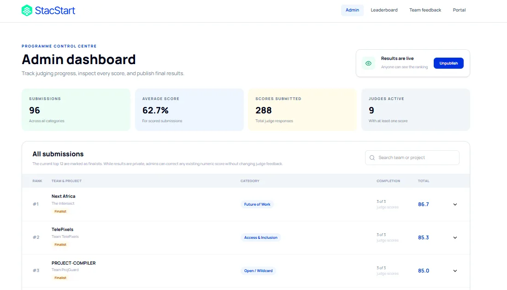
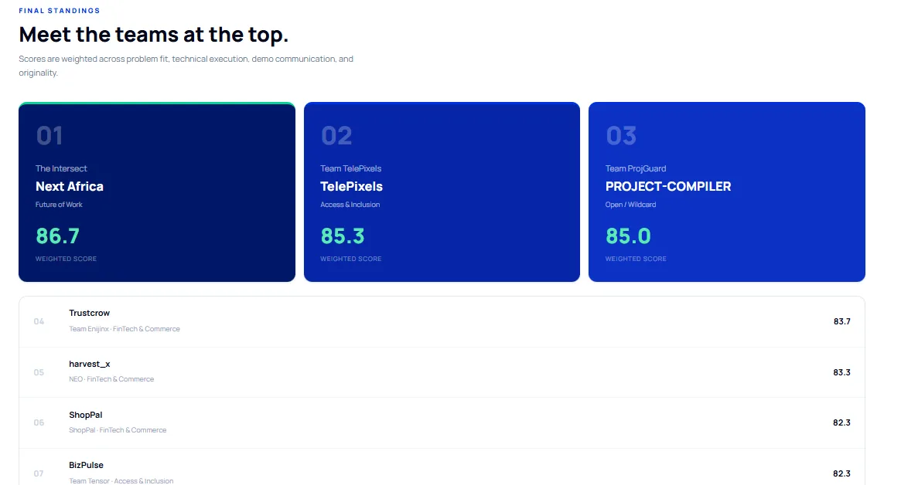
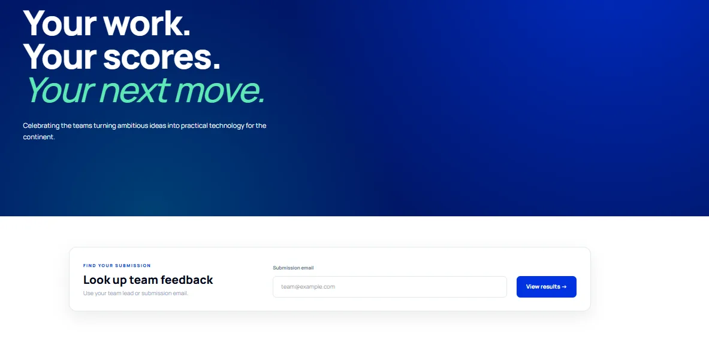

All work
Case study 01StacStart Hackathon 2026Judging and results platform
A hackathon where nobody leaves with just a number
As product manager, I designed the judging and results system for 323 developers across four countries: easy for judges to score well, useful for every team that took part, and fair enough for everyone to trust the ranking.
In 30 seconds
The problem
Hackathons usually end with a ranking and silence. Teams never learn why they placed where they did.
What I did
Product-managed the system end to end: a structured scoring flow for judges, private feedback for participants, controls for admins and a clear public ranking.
What happened
96 projects, each scored by three judges with written reasons. Every team can look up its own feedback; the ranking is public.
01
Context
StacStart ran a hackathon for builders in Nigeria, Kenya, Uganda and Ghana: a real African problem, one week to build it, $1,800 in prizes.
The hackathon sat inside the StacStart Career Summit. Teams of two to four built from 22 to 28 September, submitted by 1 October, and the winners were announced at the Summit. I was the product manager for the judging and results system. I also led developer relations, so I spent build week in the Hackathon Hub with the builders I was designing for, which shaped what they would need from the results.
By the end, 323 developers had taken part, 96 projects had been submitted and the Top 10 pitched live.
02
The problem
A ranking tells you who won. It doesn't tell 93 other teams what to do next.
Most hackathons publish a leaderboard and move on. Teams never learn why they placed where they did, scores can't be questioned, and the people who didn't win leave with nothing to improve on.
I wanted every team to leave better than they came: with feedback they could use to scale what they built or to come back stronger next time. That made this a trust problem as much as a results page. Participants had to trust that judging was fair, judges had to trust that their words wouldn't be changed, and organisers needed a way to fix mistakes without breaking either.
03
Who it's for
Judges and participants carry a hackathon. The experience had to work for both, and stay fair for everyone else.
I mapped the system around the people using it rather than the pages it needed. For judges, that meant one clear rubric of four weighted criteria and a reason box beside every score, so scoring well was the easy path. For participants, it meant feedback they could open with the email they already used, no new account needed. Each role has a clear set of things it can do, and a few things it deliberately can't.
Explore · One system, four views
Pick a role to see what it can and can't do. The rules are the product.
Participants
Can
- Submit their project through the submission form
- Look up their own team's scores and written feedback with the team lead's or submission email
- See the public ranking once results are live
Can't
- See another team's feedback
Why: feedback is only useful if it's honest, and judges are only honest if they aren't writing for an audience.
Judges
Can
- Score projects on problem fit, technical execution, demo communication and originality
- Write the reason behind every score
Protected from
- Having their written feedback edited by anyone
Why: a number without a reason isn't feedback. Requiring the reason also makes careless scoring harder.
Admins
Can
- Track judging progress: submissions, average score, scores submitted, judges active
- Inspect every score and flag finalists
- Correct a numeric score while results are still private
- Publish results with one switch, and unpublish them
Can't
- Rewrite what a judge wrote
Why: organisers need to fix typos and errors, but a correction should never change the meaning of a judge's feedback.
The public
Can
- See the full ranking and weighted scores once results are published
- See the top three spotlighted
Can't
- See any team's written feedback
- See individual judges' scores
Why: the ranking proves the process was real. The feedback belongs to the team.
04
Decisions and trade-offs
Six calls shaped the system. Most of them are about trust: between teams, judges and organisers.
A written reason behind every score
- What I chose
- Judges explain each rubric score in writing.
- What it cost
- More work for nine judges across 96 projects. Worth it: every team got evidence it could act on, not a number to guess at.
Public ranking, private feedback
- What I chose
- The ranking is public. Each team's judge notes are visible only to that team, through a lookup by team lead or submission email.
- What it cost
- A lookup flow to design and build instead of one open results page.
One leaderboard, three prizes
- What I chose
- Every submission ranked together across categories, with three prize places.
- Instead of
- A separate leaderboard for each category.
- What it cost
- Categories compete head to head, so a strong category can take more than one place. In return, the ranking is simple to read and hard to argue with.
Admins can correct, not rewrite
- What I chose
- While results are private, admins can fix a numeric score without changing the judge's feedback. Results go live with one switch and can be pulled back.
- What it cost
- Stricter rules to design for each role, and a draft state to manage before anything goes public.
Slack and a hashtag for entry
- What I chose
- Teams entered through Slack and #BuildWithStacStart, with reminders over Slack and WhatsApp, not email.
- Instead of
- A custom registration portal.
- What it cost
- A less polished sign-up. The build time went into judging and results instead, where it mattered more.
AI encouraged, low effort discouraged
- What I chose
- Builders could use AI tools, with judging criteria built to tell real problem-solving apart from low-effort generated submissions.
- What it cost
- Judges had to look past polish to the thinking underneath.
05
How it works
Results live in two states, private and published, and only admins can move between them.
- Build week22 to 28 Sept, teams of 2 to 4
- Submissions close1 Oct · 96 projects
- Judging3 judges per project, a reason for every score
- Private reviewAdmins inspect scores and correct numbers
- Live pitchesTop 10 teams
- PublishedPublic ranking + private feedback lookup. Reversible.
Simplified · highlighted stages are where the platform's rules do the work
Each judge scores a project on four weighted criteria, and the three judges' scores combine into one weighted total. While results are private, mistakes can be corrected. Once published, anyone can see the ranking, and each team can open its own feedback.
What this design relies onUsing the team lead's or submission email as the key to a team's feedback means participants don't need accounts, which kept things light for a one-week event. It works because those emails are known only to the team.
06
Working with the team
I specified how the system should behave; StacStart's engineers built the production results site.
Before engineering started on the production site, the judging model was settled: one public leaderboard, three prize places, written reasons, and the submission form opening the Monday night before judging began. Nine judges scored through the system, and during build week I worked directly with builders in the Hackathon Hub.
07
Outcome
Every one of the 96 projects received three scored judge responses, and every team can read why.
323developers
4countries
96projects submitted
288judge scores from 9 judges
Top 10pitched live
$1,800in prizes
Winners: Next Africa (Future of Work, $1,000), TelePixels (Access and Inclusion, $500) and Project Compiler (Open / Wildcard, $300).



Screenshots from the live platform. The admin view was captured while results were live.
08
Reflection
Building great products takes more than writing code.
"It takes understanding the problem, making thoughtful decisions, and bringing the right people together to make things happen."From my post after the Summit
Planned The next step is a 90-Day Builder Challenge for hackathon teams who want to keep building. I'm preparing the work plan now.